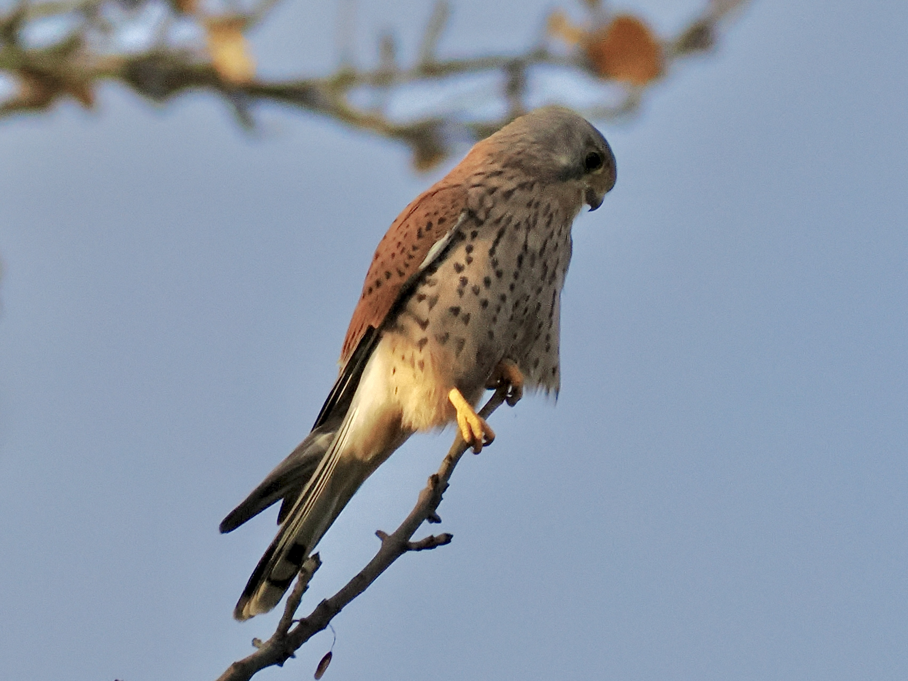
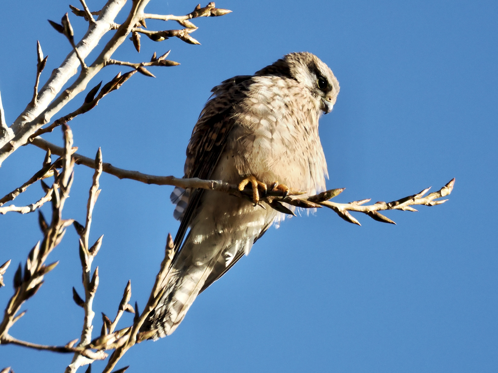

Eurasian Kestrel
Falco tinnunculus
Other names: Common Kestrel
Order: Falconiformes
Family: Falconidae

A small reddish falcon with a dark malar stripe. Male has a pale red back and tail, and a grey head. Dotted pattern on breast and belly. Hovers in the air to look for prey.

Female is overall reddish brown with more heavy streaking.
Nests in existing cavities, such as in cliffs. This female is feeding her chicks a rodent.